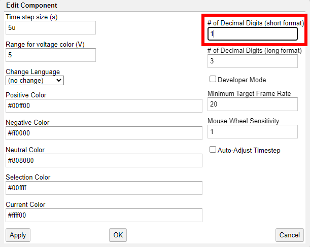
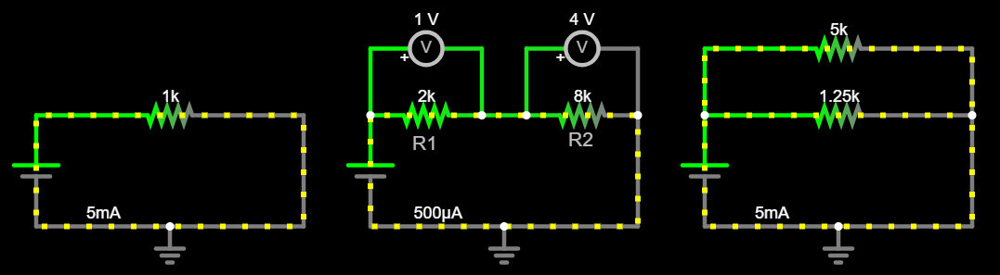
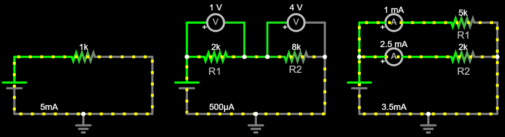

Adventure 1b: Equivalent resistance: Resistors in parallel¶
Goal¶
Understand equivalent resistance. Simulate a circuit with multiple resistors, connected in parallel. Then, build it on a breadboard.
Simulate circuit¶
Open Circuit Simulator and load the circuit from Adventure 1a: Equivalent resistance: Resistors in series. Here is an example of the finished circuit: Circuit - Resistors in series.
Use your mouse to drag a selection box around one the simplest subcircuit, so you can select multiple components. Copy and paste the simplest subcircuit once, so you have three independent subcircuits side-by-side, each with its own voltage source and connection to ground.
In the copy, add a new resistor in parallel with the old one:
Insert one more resistor, above the existing one.
Add wires to connect its two ends to the two ends of the existing resistor. This means the new resistor shares its two ends with the existing resistor, and it is connected between VCC and GND. We call these two resistors connected in parallel.
Set the resistance of one resistor to \(5kΩ\) and the resistance of the other resistor to \(1.25kΩ = 1250Ω\).
Tip
At this point Circuit Simulator may show the resistance as
1.3kΩ, although you have set it at1.25kΩ. This happens because it uses a single decimal digit to display resistance values by default, so it rounds1.25kΩto1.3kΩfor display purposes. Click Options –> Other Options… and set# of Decimal Digits (short format)to2:
Your circuit should look something like this:

If you would like some help with creating the circuit, see below.
Hint
Here is an example of the finished circuit: Circuit - Resistors in parallel.
Click RUN / Stop to start the simulation. Hover your mouse over each one of the two resistors. Notice the voltage drop is the same for both resistors, because they have the exact same ends, or terminals. How much is it?
Answer
It is exactly the same as the voltage of the source, \(V = 5V\), because the terminals of both resistors coincide with the terminals of the voltage source.
The reason the terminals of the resistors coincide with the terminals of the voltage source is that the wires that connect them are ideal. They have zero resistance and their length does not matter, we can ignore them.
Let’s call \(R_1\) the \(5kΩ\) resistor, and \(R_2\) the \(1.25kΩ\) resistor. Hover your mouse over the resistors and notice the current that flows through each resistor, \(I_1\) and \(I_2\) respectively. What are the two values, why are they different?
Answer
We notice that \(I_1 = 1mA\) and \(I_2 = 4mA\). We expected this because the two resistors have the same voltage applied at their terminals, \(V = 5V\), but have different resistance.
How much is the current that flows through the voltage source? Let’s call it \(I_T\).
Answer
The current that flows through the voltage source is \(I_T = 5mA\).
Change the value of \(R_2\) to random values in the range of \(1kΩ - 10kΩ\). Notice the values of \(I_1\) and \(I_2\) as you do that.
Tip
Click Draw –> Outputs and Labels –> Add Ammeter, and add one ammeter (“ampere meter”) in series with each resistor, two meters in total. This way each ammeter will be measuring the current flowing inside the branch of the circuit it is part of, one for \(R_1\), and one for \(R_2\).
Your circuit should look something like this:

Did you notice any changes in \(I_1\) in the previous step? Why? Did you notice any changes in \(I_2\) in the previous step?Why? What are the values of \(I_1\), \(I_2\) for \(R_2 = 2kΩ\)?
Answer
Current \(I_1\) remains constant, no matter how we change \(R_2\). We expect this because it only depends on the voltage applied to \(R_1\) and the value of \(R_1\) via Ohm’s Law. Both of these quantities remain constant, no matter how we change \(R_2\). So:
\[ I_1 = {V \over R_1} = {5V \over 5kΩ} = {5V \over {5 \cdot 10^3}Ω} = {{5 \cdot 10^{-3}V} \over 5Ω} = 1mA \]On the other hand, \(I_2\) changes whenever we change \(R_2\), and it also follows Ohm’s law. When \(R_2 = 2kΩ\) we notice \(I_2 = 2.5mA\), and this is what we expect because:
\[ I_2 = {V \over R_2} = {5V \over 2kΩ} = {5V \over {2 \cdot 10^3}Ω} = {{5 \cdot 10^{-3}V} \over 2Ω} = 2.5mA \]Let’s focus on \(I_T\), the current flows through the voltage source. Notice how it changes when you change the value of \(R_2\). Hover over the circuit and notice its value when \(R_2 = 2kΩ\). How does it relate to \(I_1\) and \(I_2\)?
Notice how the current that flows through the voltage source has two different paths to follow when it reaches the positive terminal of the two resistors. Some of it flows through \(R_1\) and becomes \(I_1\), some of it flows through \(R_2\), and becomes \(I_2\). What is the relationship between \(I_T\), \(I_1\), and \(I_T2\)?
Answer
When \(R_2 = 2kΩ\), we notice that \(I_T = 3.5mA\). We notice \(I_T\) is the sum of \(I_1 = 1mA\) and \(I_2 = 2.5mA\), since it splits into \(I_1\) and \(I_2\) at the positive terminal of the two resistors.
Similarly, notice how current \(I_1\) and \(I_2\) converge into the negative terminal of the resistors, and become \(I_T\), the current that flows through the voltage source.
Important
This is Kirchhoff’s first law, or Kirchhoff’s current law:
“The current flowing into a node (or a junction) must be equal to the current flowing out of it.”
In our case this means that:
\[ I_T = I_1 + I2 \]and by applying Ohm’s law for each resistor independently, we get:
\[ I_T = {V \over R_1} + {V \over R_2} \]Let’s focus on the simplest subcircuit, the one that has a single resistor connected to the voltage source. Try setting different values for its resistance until the current that flows through matches \(I_T = 3.5mA\). How big does the single resistor have to be, so it works the same as the two separate resistors connected in parallel? This value will be the equivalent resistance for the two resistors connected in parallel.
Answer
It needs to be \(R_T ~= 1.43kΩ\).
Can we derive a generic way to determine \(R_T\) for the two resistors \(R_1\) and \(R_2\) connected in parallel?
Important
Yes, we can start from Kirchhoff’s first law, see above, and apply Ohm’s law first for the equivalent circuit and then for each resistor independently.
From Kirchhoff’s first law we know that:
\[ I_T = I_1 + I_2 \]From Ohm’s law for the equivalent circuit we know that:
\[ I_T = {V_T \over R_T} \]From Ohm’s law for each resistor we know that:
\[ I_1 = {V_1 \over R_1} \qquad I_2 = {V_2 \over R_2} \]We combine all four equations to get:
\[ {V_T \over R_T} = {V_1 \over R_1} + {V_2 \over R_2} \]But we know the resistors are connected in parallel, so:
\[ V_T = V_1 = V_2 \]And finally we get:
\[\begin{split} \begin{align*} {V_T \over R_T} &= {V \over R_1} + {V \over R_2} \\ \\ { 1 \over R_T } &= {1 \over R_1} + {1 \over R_2} \\ \\ { 1 \over R_T } &= {R_2 \over {R_1 \cdot R_2}} + {R_1 \over {R_2 \cdot R_1}} \\ \\ { 1 \over R_T } &= {{R_2 + R_1} \over {R_1 \cdot R_2}} \\ \\ R_T &= {{R_1 \cdot R_2} \over {R_1 + R_2}} \end{align*} \end{split}\]For our specific example where \(R_1 = 5kΩ\), \(R_2 = 2kΩ\) we get:
\[ R_T = {{5kΩ \cdot 2kΩ} \over {5kΩ + 2kΩ}} = {{10kΩ \cdot \cancel{kΩ}} \over {7\cancel{kΩ}}} ~= 1429Ω \]What is the ratio \(I_1 / I_2\) for resistors \(R_1\), \(R_2\) connected in parallel?
Important
We know Ohm’s law still applies to each resistor individually, and the voltage drop is the same across both resistors.
We can combine these two facts to compute the ratio \(I_1 / I_2\).
We know that Ohm’s law applies to the two resistors individually:
\[ V_1 = {I_1 \cdot R_1} \qquad V_2 = {I_2 \cdot R_2} \]And we know the voltage drop is the same across both resistors, because they are connected in parallel. So:
\[\begin{split} \begin{align*} V_1 &= V_2 \\ \\ {I_1 \cdot R_1} &= {I_2 \cdot R_2} \\ \\ {I_1 \over I_2} &= {R_2 \over R_1} \end{align*} \end{split}\]So, the current ratio is the inverse of the resistance ratio: If one resistor has double the resistance of the other, its current will be half.
Build circuit¶
Grab your breadboard! Start from the original circuit you had built for Adventure 0: Ohm’s Law:
Take an \(80Ω\) resistor, and measure it using your multimeter. Write down this measurement.
Add it in parallel with the original \(150Ω\) resistor.
Compute the equivalent resistance of the two resistors.
Use your multimeter to measure the input voltage.
Compute the current you expect will flow through the circuit, using Ohm’s law for the equivalent circuit.
Measure the current that flows through this circuit.
Compute the current you expect for each resistor, using Ohm’s law.
Measure the current flowing through each one of the resistors, and compare with your computations above.
Celebrate¶
Congratulations! You’ve simulated and built circuits with resistors in parallel.
Here are more resources to explore: